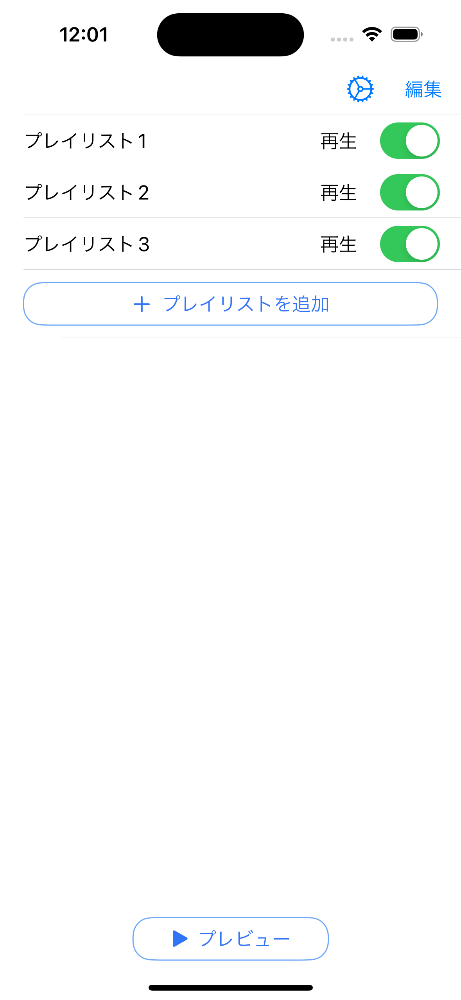
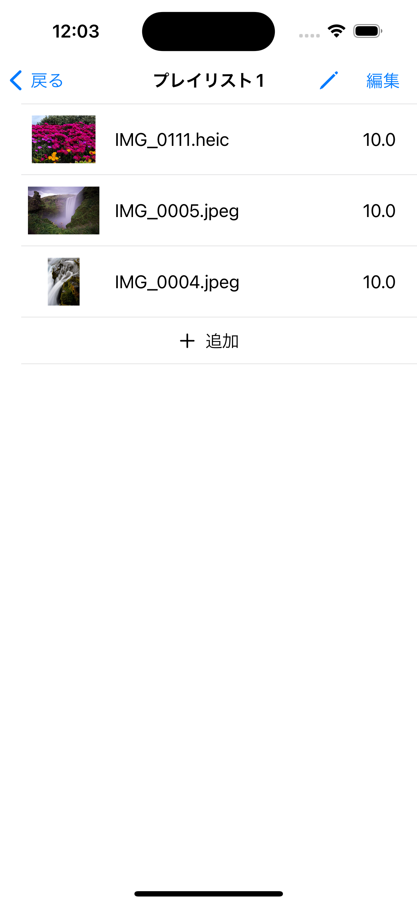
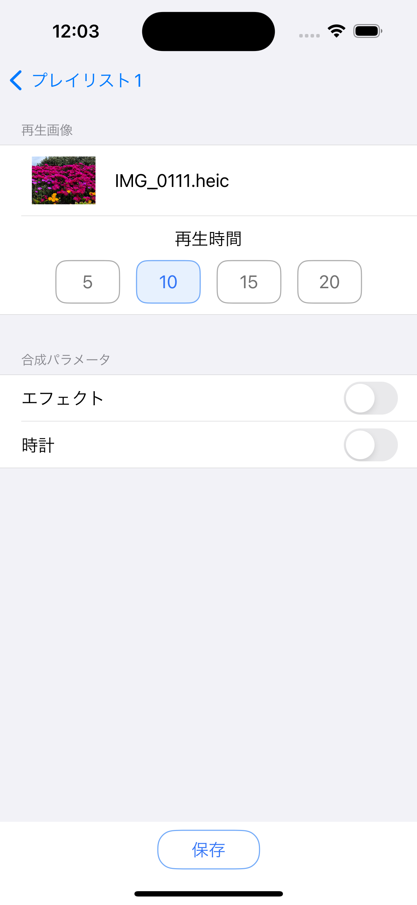

アプリの概要
Signage Master Viewは、iPhoneやiPadとHDMIモニターを組み合わせて簡単にデジタルサイネージを構築できるアプリです。
Lightning - Digital AVアダプタやUSB-C Digital AV Multiportアダプタを使用することで、手軽に高品質なディスプレイを設置できます。
また、HDMIモニターを縦に回転させても対応できる回転表示機能を搭載しており、さまざまなシーンで活躍します。
さらに、静止画や動画をプレイリストに登録すれば、指定した順番通りにコンテンツを自動再生できます。
静止画の再生時間は5、10、15、20秒から選択可能で、柔軟な表示設定が可能です。
Signage Master Viewで、あなたのビジネスやイベントをより魅力的に演出しましょう。
画面の説明

複数のプレイリストを作成できます。利用シーンに応じてプレイリストを使い分けることができます。

再生する順番の変更や追加が簡単にできます。

静止画像は、再生時間、時計表示の有無など設定可能です。